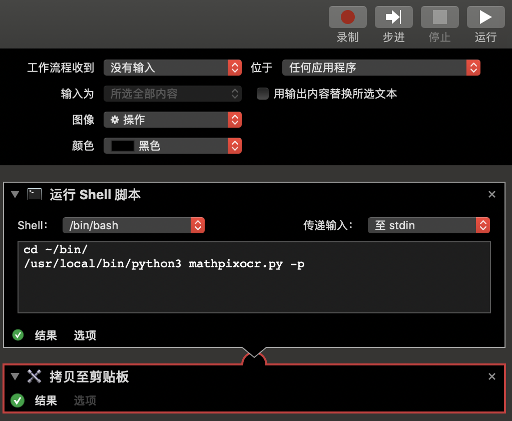
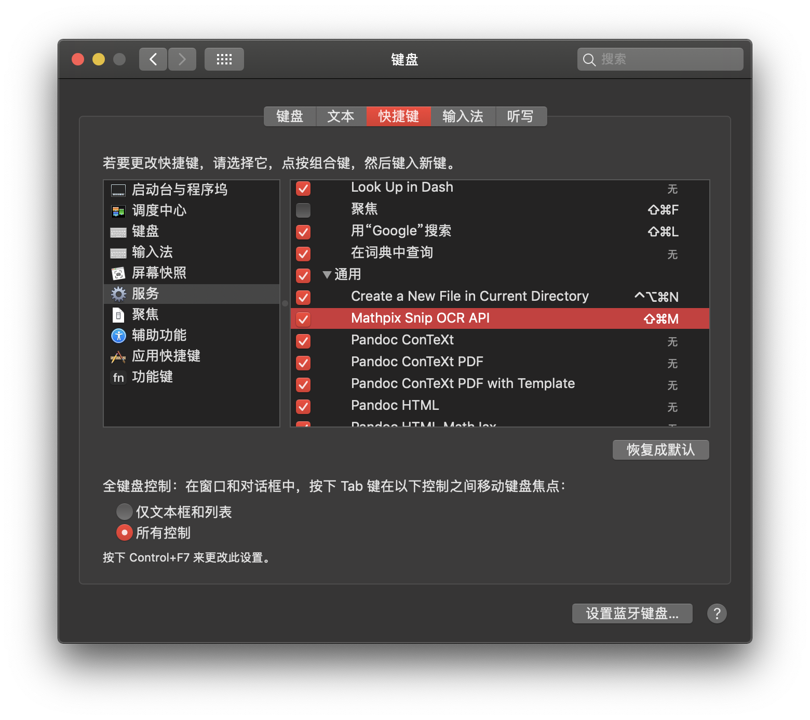

<!DOCTYPE HTML>
<html>
<head>
  <meta charset="utf-8">
  
  <title>Python笔记(四)——使用MathpixOCR API进行LaTeX公式识别 | Shigaro</title>
  <meta name="author" content="minyez">
  
  <meta name="description" content="minyez&#39;s blog on life, science and programming">
  
  
  <meta name="viewport" content="width=device-width, initial-scale=1, maximum-scale=1">

  <meta property="og:title" content="Python笔记(四)——使用MathpixOCR API进行LaTeX公式识别"/>
  <meta property="og:site_name" content="Shigaro"/>

  
    <meta property="og:image" content=""/>
  

  
  
    <link href="/assets/images/favicon/icon.png" rel="icon">
  
  
  <link rel="stylesheet" href="/css/bootstrap.min.css" media="screen" type="text/css">
  <link rel="stylesheet" href="/css/bootstrap.css" media="screen" type="text/css">
  <link rel="stylesheet" href="/css/font-awesome.css" media="screen" type="text/css">
  <link rel="stylesheet" href="/css/style.css" media="screen" type="text/css">
  <link rel="stylesheet" href="/css/responsive.css" media="screen" type="text/css">
  <link rel="stylesheet" href="/css/highlight.css" media="screen" type="text/css">
  <link rel="stylesheet" href="/css/google-fonts.css" media="screen" type="text/css">
  <!--[if lt IE 9]><script src="//html5shiv.googlecode.com/svn/trunk/html5.js"></script><![endif]-->

  <script src="/js/jquery-2.0.3.min.js"></script>

  <!-- analytics -->
  
<script>
  (function(i,s,o,g,r,a,m){i['GoogleAnalyticsObject']=r;i[r]=i[r]||function(){
  (i[r].q=i[r].q||[]).push(arguments)},i[r].l=1*new Date();a=s.createElement(o),
  m=s.getElementsByTagName(o)[0];a.async=1;a.src=g;m.parentNode.insertBefore(a,m)
  })(window,document,'script','//www.google-analytics.com/analytics.js','ga');
  ga('create', 'UA-111612868-1', 'auto');
  ga('send', 'pageview');
</script>


<script async src="//busuanzi.ibruce.info/busuanzi/2.3/busuanzi.pure.mini.js">
</script>


</head>

 <body 
>
  <nav id="main-nav" class="navbar navbar-default navbar-fixed-top" role="navigation">
    <div class="container">
      <button type="button" class="navbar-header navbar-toggle" data-toggle="collapse" data-target=".navbar-collapse">
		<span class="sr-only">Toggle navigation</span>
        <span class="icon-bar"></span>
        <span class="icon-bar"></span>
        <span class="icon-bar"></span>
      </button>
	  <a class="navbar-brand" href="/"></a>
      <div class="collapse navbar-collapse nav-menu">
		    <ul class="nav navbar-nav">
		      

          <!-- Categories -->
          
          <li>
            <a href="/" title="Shigaro's Home" style="font-weight: normal; font-family: Calibri,Arial; font-size: 18px">
              <i class="fa fa-bank"></i>Home
            </a>
          </li>
          
		      

          <!-- Categories -->
          
          <!-- Archives -->
          <li>
            <a href="/archives" title="All the articles." style="font-weight: normal; font-family: Calibri,Arial; font-size:     18px">
            <i class="fa fa-archive"></i>Archives
            </a>
          </li>

          
		      

          <!-- Categories -->
          
		      <li class="dropdown">
            <a href="/categories" class="dropdown-toggle" data-toggle="dropdown" title="All the categories." style="font-weight: normal; font-family: Calibri,Arial; font-size:     18px">
		    	  <i class="fa fa-folder"></i>Categories
            <b class="caret"></b>   
		    	  </a>
            <ul class="dropdown-menu">
              <li class="divider"></li>
              <li><a href="/categories" style="font-size: 20px; font-family: 'Calibri Light',Arial">All Categories</a><span></span></li>
              <li class="divider"></li>
              
              <li><a href="/categories/Software/" style="font-size: 15px; font-family: 微软雅黑">Software<span></span></a></li>
              
              <li><a href="/categories/Programming/" style="font-size: 15px; font-family: 微软雅黑">Programming<span></span></a></li>
              
              <li><a href="/categories/Algorithm/" style="font-size: 15px; font-family: 微软雅黑">Algorithm<span></span></a></li>
              
              <li><a href="/categories/Life/" style="font-size: 15px; font-family: 微软雅黑">Life<span></span></a></li>
              
              <li class="divider"></li>
            </ul>
		      </li>

          
		      

          <!-- Categories -->
          
          <!-- Tags -->
          <li class="dropdown">
            <a href="/tags" class="dropdown-toggle" data-toggle="dropdown" title="All the tags." style="font-weight: normal; font-family: Calibri,Arial; font-size:     18px">
            <i class="fa fa-tags"></i>Tags
            <b class="caret"></b>   
            </a>
            <ul class="dropdown-menu">
              <li class="divider"></li>
              <li><a href="/tags" style="font-size: 20px; font-family: 'Calibri Light',Arial">All Tags</a><span></span></li>
              <li class="divider"></li>
              
              <li><a href="/tags/WIEN2k/" style="font-size: 15px; font-family: 微软雅黑">WIEN2k<span></span></a></li>
              
              <li><a href="/tags/Compilation/" style="font-size: 15px; font-family: 微软雅黑">Compilation<span></span></a></li>
              
              <li><a href="/tags/GPAW/" style="font-size: 15px; font-family: 微软雅黑">GPAW<span></span></a></li>
              
              <li><a href="/tags/Bugfix/" style="font-size: 15px; font-family: 微软雅黑">Bugfix<span></span></a></li>
              
              <li><a href="/tags/Intel/" style="font-size: 15px; font-family: 微软雅黑">Intel<span></span></a></li>
              
              <li><a href="/tags/DFT/" style="font-size: 15px; font-family: 微软雅黑">DFT<span></span></a></li>
              
              <li><a href="/tags/Valgrind/" style="font-size: 15px; font-family: 微软雅黑">Valgrind<span></span></a></li>
              
              <li class="divider"></li>
            </ul>
          </li>
          
          
		      

          <!-- Categories -->
          
          <li>
            <a href="/about" title="About me." style="font-weight: normal; font-family: Calibri,Arial; font-size: 18px">
              <i class="fa fa-user"></i>About
            </a>
          </li>
          
		      
		    </ul>
      </div>
    </div> <!-- container -->
</nav>
<div class="clearfix"></div>

  <div class="container">
  	<div class="content">
    	 


	
		<div class="page-header">		
			<h1> Python笔记(四)——使用MathpixOCR API进行LaTeX公式识别</h1>
		</div>		
	


<div class="row post">
	<!-- cols -->
	
	<div id="top_meta"></div>
	<div class="col-md-9">
	

	<!-- content -->
	<div class="mypage">		
	  		

	  <link rel="stylesheet" type="text/css" href="/css/hint.min.css"><h2 id="前言"><a href="#前言" class="headerlink" title="前言"></a>前言</h2><p>本文介绍编写MathpixOCR API的Python包装器和简单的Automator workflow, 模拟Mathpix Snip Tool的公式识别体验.<br><a id="more"></a></p>
<p>用LaTeX准备文献报告时一个比较头疼的问题是输入文献中包含复杂符号的长公式. <a href="https://mathpix.com/" target="_blank" rel="noopener">Mathpix Snip Tool</a> (MST)提供了方便的光学字符识别功能, 可以将包含公式的截图转化为LaTeX代码. 今年MST从完全免费的1.0版本升级到了2.0, 自此个人用户每月只能免费识别50次, 这对于苦逼PhD显然是不够用的.</p>
<p>好在作为MST底层的MathpixOCR服务, API每月可免费调用1000次, 所得结果和MST相同, 只是没有MST方便的截图和GUI功能. 归根结底, 我们想实现的无非是识别剪贴板中的公式图片, 转化图片到LaTeX代码并复制到剪贴板而已. 这可以通过将OCR与OS命令包装在一起来实现. 官方提供了简单的<a href="https://github.com/Mathpix/api-examples/tree/master/python">例子</a>供我们学习OCR API的使用, 而OS API可以通过Python包和CLI命令调用. 这篇文章是学习包装器编写的记录.</p>
<p>最终脚本已上传到<a href="https://github.com/minyez/mathpixocr_wrapper">GitHub仓库</a>, 欢迎下载使用.</p>
<h2 id="API包装"><a href="#API包装" class="headerlink" title="API包装"></a>API包装</h2><h3 id="获取API密钥"><a href="#获取API密钥" class="headerlink" title="获取API密钥"></a>获取API密钥</h3><p>首先需要在Mathpix上注册用户并填写信用卡信息, 注册后获得<code>app_key</code>和<code>app_id</code>作为API密钥.<br>脚本采用了两种从外部获取密钥的方式, 一种是环境变量, 另一种是从同路径下JSON读取.</p>
<h3 id="从系统剪贴板获取图片"><a href="#从系统剪贴板获取图片" class="headerlink" title="从系统剪贴板获取图片"></a>从系统剪贴板获取图片</h3><p>使用pillow包中的<code>ImageGrab.grabclipboard</code>获取剪贴版中的图片, 并产生<code>Image</code>对象.<br>注意, 此后剪贴板中的临时文件会被删除, 无法再直接通过路径获得.</p>
<figure class="highlight python"><table><tr><td class="gutter"><pre><span class="line">1</span><br><span class="line">2</span><br><span class="line">3</span><br><span class="line">4</span><br></pre></td><td class="code"><pre><span class="line"><span class="meta">&gt;&gt;&gt; </span><span class="keyword">from</span> PIL <span class="keyword">import</span> ImageGrab</span><br><span class="line"><span class="meta">&gt;&gt;&gt; </span>im = ImageGrab.grabclipboard()</span><br><span class="line"><span class="meta">&gt;&gt;&gt; </span>os.path.isfile(im.filename)</span><br><span class="line"><span class="keyword">False</span></span><br></pre></td></tr></table></figure>
<p>因此需要先把图片保存下来才能在后续继续使用.</p>
<figure class="highlight python"><table><tr><td class="gutter"><pre><span class="line">1</span><br><span class="line">2</span><br><span class="line">3</span><br></pre></td><td class="code"><pre><span class="line">im = ImageGrab.grabclipboard()</span><br><span class="line">fn = <span class="string">".temp_eq.png"</span></span><br><span class="line">im.save(fn, <span class="string">"PNG"</span>)</span><br></pre></td></tr></table></figure>
<h3 id="base64编码"><a href="#base64编码" class="headerlink" title="base64编码"></a>base64编码</h3><p>OCR需要把图片编码转化为base64编码格式. 官方例子如下</p>
<figure class="highlight python"><table><tr><td class="gutter"><pre><span class="line">1</span><br><span class="line">2</span><br><span class="line">3</span><br><span class="line">4</span><br></pre></td><td class="code"><pre><span class="line"><span class="keyword">import</span> base64</span><br><span class="line"><span class="function"><span class="keyword">def</span> <span class="title">image_uri</span><span class="params">(fn)</span>:</span></span><br><span class="line">  image_data = open(fn, <span class="string">"rb"</span>).read()</span><br><span class="line">  <span class="keyword">return</span> <span class="string">"data:image/jpg;base64,"</span> + base64.b64encode(image_data).decode()</span><br></pre></td></tr></table></figure>
<p><code>b64encode</code>使用Base64规则将一串类字节字符串进行编码, <code>decode</code>方法返回编码后的普通字符串.</p>
<figure class="highlight python"><table><tr><td class="gutter"><pre><span class="line">1</span><br><span class="line">2</span><br><span class="line">3</span><br><span class="line">4</span><br><span class="line">5</span><br></pre></td><td class="code"><pre><span class="line"><span class="meta">&gt;&gt;&gt; </span>ec = base64.b64encode(<span class="string">b"abcdefg"</span>)</span><br><span class="line"><span class="meta">&gt;&gt;&gt; </span>ec</span><br><span class="line"><span class="string">b'YWJjZGVmZw=='</span></span><br><span class="line"><span class="meta">&gt;&gt;&gt; </span>ec.decode()</span><br><span class="line"><span class="string">'YWJjZGVmZw=='</span></span><br></pre></td></tr></table></figure>
<p>前部附加的字符串是API额外要求的. 我还不太明白<code>jpg</code>的作用, 因为当<code>fn</code>是一个png图片时OCR一样可以正确解析.</p>
<h3 id="调用API"><a href="#调用API" class="headerlink" title="调用API"></a>调用API</h3><p>通过<code>requests</code>包与OCR API进行通信. 通信数据要求为JSON, 它至少需要包含<code>src</code>和<code>format</code>两个键. <code>src</code>值就是base64编码后的图片字符串, <code>format</code>值为一个列表, 成员为所想要转换的格式, 支持的转化格式包括下面几种.</p>
<table>
<thead>
<tr>
<th style="text-align:left"><code>format</code>值</th>
<th style="text-align:left">转化格式</th>
</tr>
</thead>
<tbody>
<tr>
<td style="text-align:left"><code>text</code></td>
<td style="text-align:left">普通文本</td>
</tr>
<tr>
<td style="text-align:left"><code>wolfram</code></td>
<td style="text-align:left">Mathematica</td>
</tr>
<tr>
<td style="text-align:left"><code>latex_simplified</code></td>
<td style="text-align:left">简化的latex代码, 括号不包含left或right</td>
</tr>
<tr>
<td style="text-align:left"><code>latex_styled</code></td>
<td style="text-align:left">left/right控制的latex代码</td>
</tr>
</tbody>
</table>
<p>利用<code>json</code>包处理JSON文件</p>
<figure class="highlight python"><table><tr><td class="gutter"><pre><span class="line">1</span><br><span class="line">2</span><br><span class="line">3</span><br><span class="line">4</span><br><span class="line">5</span><br><span class="line">6</span><br><span class="line">7</span><br><span class="line">8</span><br></pre></td><td class="code"><pre><span class="line">data = json.dump(&#123;<span class="string">"src"</span>: img_base64, <span class="string">"format"</span>: [<span class="string">"latex_simplified"</span>,]&#125;)</span><br><span class="line">headers = &#123;</span><br><span class="line">  <span class="string">'Content-type'</span>: <span class="string">'application/json'</span>,</span><br><span class="line">  <span class="string">'app_key'</span>: your_app_key,</span><br><span class="line">  <span class="string">'app_id'</span>: your_app_id,</span><br><span class="line">  &#125;</span><br><span class="line">r = requests.post(<span class="string">'https://api.mathpix.com/v3/latex'</span>,</span><br><span class="line">                  data=data, headers=headers)</span><br></pre></td></tr></table></figure>
<p>通信得到的<code>r.text</code>是一个JSON字符串. 如果OCR识别成功, 则它包含<code>latex_simplified</code>键, 对应值为识别号的简化LaTeX代码.<br>如果识别失败, 则包含<code>error</code>键, 给出具体错误信息. 更复杂的API调用参考<a href="https://docs.mathpix.com/" target="_blank" rel="noopener">官方文档</a>.</p>
<h3 id="拷贝转化好的LaTeX到系统剪贴板"><a href="#拷贝转化好的LaTeX到系统剪贴板" class="headerlink" title="拷贝转化好的LaTeX到系统剪贴板"></a>拷贝转化好的LaTeX到系统剪贴板</h3><p>参考了<a href="https://gist.github.com/luqmaan/d8bc61e746207bb12f11" target="_blank" rel="noopener">这个GIST</a>, 使用macOS上的<code>pbcopy</code>将字符串拷贝到系统剪贴板.<br>另一种办法是直接打印到标准输出, 然后用Automator服务中的功能拷贝到剪贴板.</p>
<h3 id="附加功能"><a href="#附加功能" class="headerlink" title="附加功能"></a>附加功能</h3><p>比如每月API调用统计以及历史记录, 都保存在JSON文件中. 实现说起来比较琐碎, 就不赘述了.</p>
<h2 id="Automator服务"><a href="#Automator服务" class="headerlink" title="Automator服务"></a>Automator服务</h2><p>把写好的包装器放到<code>~/bin</code>下, 编写简单的工作流<code>Mathpix Snip OCR API</code></p>
<p><figure class="null"><figcaption> </figcaption></figure></p>
<p>然后在系统设置-键盘-快捷键设置服务的快捷键</p>
<p><figure class="null"><figcaption> </figcaption></figure></p>
<p>如此一来, <code>cmd+shift+4</code>将公式截屏到剪贴板后<code>cmd+shift+M</code>, 等待片刻即可从剪贴板黏贴转换好的公式. 大功告成!</p>
<h2 id="参考资料"><a href="#参考资料" class="headerlink" title="参考资料"></a>参考资料</h2><p>使用pillow包来获取剪贴板图片: <a href="https://zhuanlan.zhihu.com/p/83678942" target="_blank" rel="noopener">Mathpix收费了？快使用API吧，一个月免费识别1000次！</a></p>
	  
	</div>

    
	<div>
  	<center>
	<div class="pagination">
<ul class="pagination">
	 
		
          <li class="prev disabled"><a><i class="fa fa-arrow-circle-o-left"></i>Prev</a></li>
        

        <li><a href="/archives"><i class="fa fa-archive"></i>Archive</a></li>

		
		   <li class="next"><a href="/2019/10/20/speaker-map/" class="alignright next">Next<i class="fa fa-arrow-circle-o-right"></i></a></li>         
        
	
</ul>
</div>

    </center>
	</div>
    
	
    <!-- bdshare -->
    
        

        

    

	<!-- comment -->
    
<section id="comment">
  <h2 class="title">Comments</h2>

  
<div id="disqus_thread"></div>
<script>
/**
*  RECOMMENDED CONFIGURATION VARIABLES: EDIT AND UNCOMMENT THE SECTION BELOW TO INSERT DYNAMIC VALUES FROM YOUR PLATFORM OR CMS.
*  LEARN WHY DEFINING THESE VARIABLES IS IMPORTANT: https://disqus.com/admin/universalcode/#configuration-variables*/
/*
var disqus_config = function () {
this.page.url = PAGE_URL;  // Replace PAGE_URL with your page's canonical URL variable
this.page.identifier = PAGE_IDENTIFIER; // Replace PAGE_IDENTIFIER with your page's unique identifier variable
};
*/
(function() { // DON'T EDIT BELOW THIS LINE
var d = document, s = d.createElement('script');
s.src = 'https://shigaro.disqus.com/embed.js';
s.setAttribute('data-timestamp', +new Date());
(d.head || d.body).appendChild(s);
})();
</script>
<noscript>Please enable JavaScript to view the <a href="https://disqus.com/?ref_noscript">comments powered by Disqus.</a></noscript>
  
</section>


	</div> <!-- col-md-9/col-md-12 -->
		
	
	<div id="side_meta">
		<div class="col-md-3" id="post_meta"> 

	<!-- date -->
	
	<div class="meta-widget">
	<i class="fa fa-clock-o"></i>
	2019-10-28 
	</div>
	

	<!-- page view by busuanzi -->
	

	<!-- post word count -->
	
	<div class="meta-widget">
	<i class="fa fa-tachometer"></i>
	<span class="post-count">1.1k</span> words
	</div>
	

	<!-- categories -->
    
	<div class="meta-widget">
	<a data-toggle="collapse" data-target="#categorys"><i class="fa fa-folder"></i></a>	
    <ul id="categorys" class="tag_box list-unstyled collapse in">
          
  <li>
    <li><a href="/categories/Software/">Software<span class="badge">19</span></a></li>
  </li>

    </ul>
	</div>
	

	<!-- tags -->
	
	<div class="meta-widget">
	<a data-toggle="collapse" data-target="#tags"><i class="fa fa-tags"></i></a>		  
    <ul id="tags" class="tag_box list-unstyled collapse in">	  
	    
  <li><a href="/tags/LaTeX/">LaTeX<span class="badge">2</span></a></li> <li><a href="/tags/MathpixOCR/">MathpixOCR<span class="badge">1</span></a></li>

    </ul>
	</div>
		

	<!-- toc -->
	<div class="meta-widget">
	
	   <a data-toggle="collapse" data-target="#toc"><i class="fa fa-bars"></i></a>
	   <div id="toc" class="toc collapse in">
			<ol class="toc-article"><li class="toc-article-item toc-article-level-2"><a class="toc-article-link" href="#前言"><span class="toc-article-text">前言</span></a></li><li class="toc-article-item toc-article-level-2"><a class="toc-article-link" href="#API包装"><span class="toc-article-text">API包装</span></a><ol class="toc-article-child"><li class="toc-article-item toc-article-level-3"><a class="toc-article-link" href="#获取API密钥"><span class="toc-article-text">获取API密钥</span></a></li><li class="toc-article-item toc-article-level-3"><a class="toc-article-link" href="#从系统剪贴板获取图片"><span class="toc-article-text">从系统剪贴板获取图片</span></a></li><li class="toc-article-item toc-article-level-3"><a class="toc-article-link" href="#base64编码"><span class="toc-article-text">base64编码</span></a></li><li class="toc-article-item toc-article-level-3"><a class="toc-article-link" href="#调用API"><span class="toc-article-text">调用API</span></a></li><li class="toc-article-item toc-article-level-3"><a class="toc-article-link" href="#拷贝转化好的LaTeX到系统剪贴板"><span class="toc-article-text">拷贝转化好的LaTeX到系统剪贴板</span></a></li><li class="toc-article-item toc-article-level-3"><a class="toc-article-link" href="#附加功能"><span class="toc-article-text">附加功能</span></a></li></ol></li><li class="toc-article-item toc-article-level-2"><a class="toc-article-link" href="#Automator服务"><span class="toc-article-text">Automator服务</span></a></li><li class="toc-article-item toc-article-level-2"><a class="toc-article-link" href="#参考资料"><span class="toc-article-text">参考资料</span></a></li></ol>
		</div>
	
	</div>
	
    <hr>
	
</div><!-- col-md-3 -->

	</div>
		

</div><!-- row -->

<script type="text/javascript">
var disqus_shortname = 'shigaro';
(function(){
  var dsq = document.createElement('script');
  dsq.type = 'text/javascript';
  dsq.async = true;
  dsq.src = '//' + disqus_shortname + '.disqus.com/embed.js';
  (document.getElementsByTagName('head')[0] || document.getElementsByTagName('body')[0]).appendChild(dsq);
}());
</script>


	</div>
  </div>
  <div class="container-narrow">
  <footer> <p>
  
  &copy; 2020 by <a href="https://github.com/minyez"> minyez </a>
  
    | <a href="http://github.com/minyez/hexo-theme-freemind/">Theme</a> based on two Freemind themes by <a href="https://github.com/wzpan/hexo-theme-freemind/">wzpan</a> and <a href="https://github.com/PytLab/hexo-theme-freemind/">PytLab</a> 
    | Powered by <a href="https://github.com/hexojs/hexo">Hexo</a>
  
    <span id="busuanzi_container_site_uv">| <span id="busuanzi_value_site_uv"></span> visitors</span>
  
  
	| <span class="post-count">42.9k</span> words
  
</p>
 </footer>
</div> <!-- container-narrow -->
  


  
<a id="gotop" href="#">   
  <span>▲</span> 
</a>

<script src="/js/jquery.imagesloaded.min.js"></script>
<script src="/js/gallery.js"></script>
<script src="/js/bootstrap.min.js"></script>
<script src="/js/main.js"></script>
<script src="/js/search.js"></script> 


<link rel="stylesheet" href="/fancybox/jquery.fancybox.css" media="screen" type="text/css">
<script src="/fancybox/jquery.fancybox.pack.js"></script>
<script type="text/javascript">
(function($){
  $('.fancybox').fancybox();
})(jQuery);
</script>


   <script type="text/javascript">      
     var search_path = "search.xml";
	 if (search_path.length == 0) {
	 	search_path = "search.xml";
	 }
	 var path = "/" + search_path;
     searchFunc(path, 'local-search-input', 'local-search-result');
   </script>


<!-- Global site tag (gtag.js) - Google Analytics -->
<!--    added 2018-07-12 -->
<!-- modified 2019-05-10 -->

<script async src="https://www.googletagmanager.com/gtag/js?id=UA-111612868-1"></script>
<script>
  window.dataLayer = window.dataLayer || [];
  function gtag(){dataLayer.push(arguments);}
  gtag('js', new Date());

  gtag('config', 'UA-111612868-1');
</script>


<script type="text/x-mathjax-config">
    MathJax.Hub.Config({
        tex2jax: {
            inlineMath: [ ["$","$"], ["\\(","\\)"] ],
            skipTags: ['script', 'noscript', 'style', 'textarea', 'pre', 'code'],
            processEscapes: true
        },
        TeX: {equationNumbers: { autoNumber: "AMS" }}
    });
    MathJax.Hub.Queue(function() {
        var all = MathJax.Hub.getAllJax();
        for (var i = 0; i < all.length; ++i)
            all[i].SourceElement().parentNode.className += ' has-jax';
    });
</script>
<!--<script src="http://cdn.mathjax.org/mathjax/latest/MathJax.js?config=TeX-AMS-MML_HTMLorMML"></script>-->
<script type="text/javascript" async src="https://cdnjs.cloudflare.com/ajax/libs/mathjax/2.7.1/MathJax.js?config=TeX-AMS-MML_HTMLorMML"></script>

</body>
   </html>
